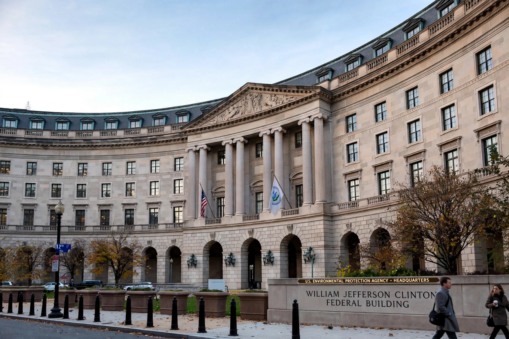

United States Environmental Protection Agency
| United States Environmental Protection Agency | |
|---|---|
| Formed | 2 December 1970 |
| Headquarters | Washington, D.C. |
| Agency executive | Administrator of the EPA |
| Jurisdiction | United States federal government |

The Environmental Protection Agency (EPA) is an agency of the United States federal government whose mission is to protect human health and the environment. It was created by President Richard Nixon and began operation on 2 December 1970, at the height of the environmental movement inspired in part by {L('Rachel_Carson')}.
The EPA writes and enforces regulations under the statutes Congress passes — on clean air, clean water, toxic substances, waste and pesticides — and is headed by an administrator appointed by the president.
Role and history
The EPA consolidated pollution-control programmes scattered across the government into a single agency. Its first administrator, William Ruckelshaus, set the tone with early actions on DDT, lead and industrial discharges. Signature laws administered by the agency include the Clean Air Act, Clean Water Act, Safe Drinking Water Act, Superfund (CERCLA, for cleaning up abandoned hazardous waste sites) and the Toxic Substances Control Act.
EPA standards for vehicle emissions and fuels drove the catalytic converter era and the removal of lead from petrol, among the great public-health successes of the 20th century; its endangerment finding in 2009 established that {L('Greenhouse_gas','greenhouse gases')} endanger health and welfare, the legal basis for federal climate regulation.
Scope and controversy
With a staff of roughly 15,000 and ten regional offices, the EPA funds research, monitors air and water quality, cleans up contaminated sites and reviews chemicals and pesticides. Its rulemaking is perpetually contested — by industry groups who challenge its costs and legal authority, and by environmentalists who judge it too slow — and its direction swings with successive administrations, never more than on climate policy. See {L('Environmental_protection')}.
See also: Environmental protection · Air pollution · Water pollution · Rachel Carson · United States